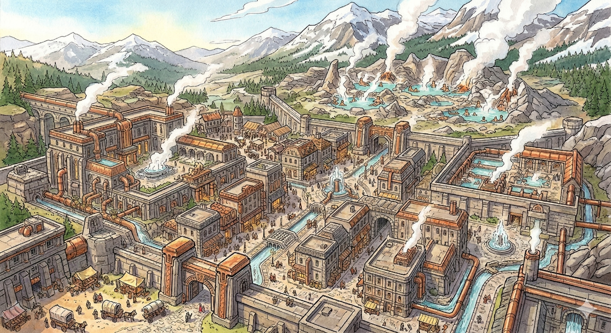

Overview
A village near natural hot springs, where dwarves relax and indulge in steam baths after a hard day's work.
Settlement

A village near natural hot springs, where dwarves relax and indulge in steam baths after a hard day's work.